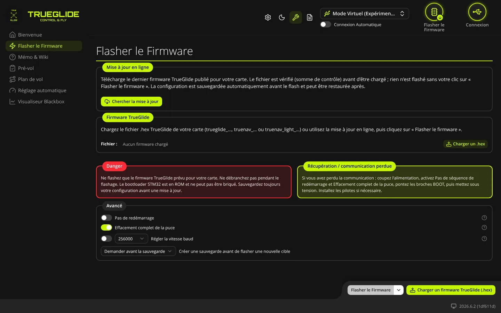
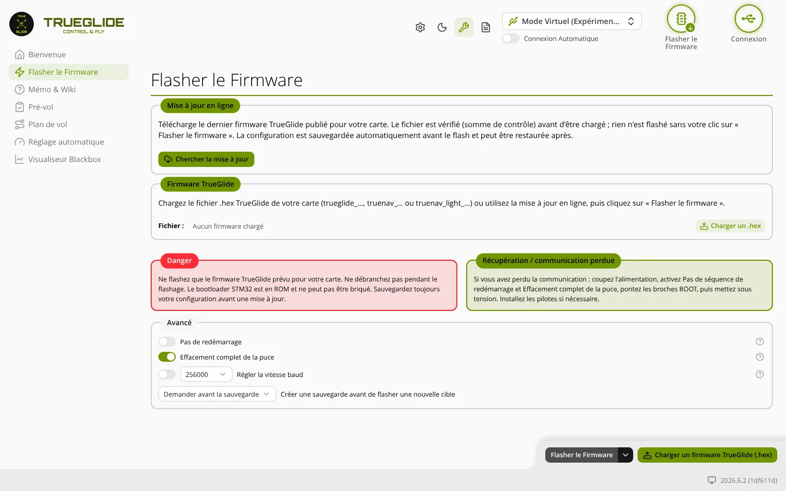

TRUE
TRUEFlasher le Firmware
L'onglet Flasher le Firmware (groupe « Sans carte branchée ») sert à installer un firmware TRUEGLIDE, TRUENAV ou TRUENAV_LIGHT sur le contrôleur de vol, à partir de la mise à jour en ligne ou d'un fichier .hex de l'ordinateur.


diff all dans l'onglet Ligne de commande (CLI), puis Enregistrer sous). Ne débranchez jamais la carte pendant le flash.L'onglet n'a qu'un écran. Il n'y a pas de liste de cartes à choisir ni de compilation en ligne : le firmware vient soit de la mise à jour en ligne, soit d'un fichier .hex.
Mise à jour en ligne
Ce cadre télécharge un firmware publié sur le site de TrueGlide. Le logiciel ne contacte Internet qu'au clic sur le bouton.
- Cliquez sur Chercher la mise à jour. Le logiciel lit la liste des firmwares publiés et affiche « Version publiée : … (révision …, date) ».
- Choisissez la Carte (nom du fichier) dans la liste. Si une carte a déjà été connectée sur cet ordinateur, elle est proposée d'office et la ligne « Carte vue à la dernière connexion : … » s'affiche.
- Choisissez le Modèle : TRUEGLIDE, TRUENAV ou TRUENAV_LIGHT (seuls les modèles publiés apparaissent).
- Cliquez sur Télécharger. Le message « Téléchargement et vérification… » s'affiche. Le fichier est décompressé, sa taille et sa somme de contrôle SHA-256 sont comparées à la liste publiée.
- Si tout concorde : « … téléchargé et vérifié : cliquez sur « Flasher le firmware » ». Le fichier apparaît dans le cadre Firmware TrueGlide. Rien n'est encore écrit sur la carte.
Messages possibles :
- Pas de firmware publié pour … (…) : cette carte n'existe pas dans ce modèle. Utilisez un fichier .hex local.
- Mise à jour en ligne indisponible (…) : pas d'Internet ou site injoignable. Vérifiez la connexion, ou chargez un fichier .hex.
- Téléchargement refusé (…) : rien n'a été chargé. : par exemple « fichier abîmé (somme de contrôle différente) ». Recommencez plus tard.
Le bouton Mettre à jour du Tableau de bord mène au même endroit : il déconnecte le drone, ouvre cet onglet et télécharge le firmware tout seul. Il faut toujours cliquer sur Flasher le Firmware pour l'écrire.
Firmware TrueGlide
Ce cadre montre le fichier chargé. Le bouton Charger un .hex (et le bouton Charger un firmware TrueGlide (.hex) en bas de l'écran) ouvre le choix d'un fichier .hex sur l'ordinateur. Cela marche sans Internet.
- Fichier : nom du fichier chargé, ou « Aucun firmware chargé ».
- Taille : taille du firmware en octets.
- Modèle, Version, MCU, Carte (nom du fichier) : lus dans le nom du fichier, seulement s'il commence par
trueglide_,truenav_outruenav_light_. Le nom suit la formetrueglide_2026.6.2_STM32F405_SPEEDYBEEF405MINI.hex. - Carte détectée : nom de la carte connue par le logiciel (lu lors d'une connexion précédente). Absent si le logiciel ne le connaît pas.
- État du flashage : anneau de progression et texte pendant le flash, puis résultat du dernier flash.
Deux avertissements peuvent apparaître sous le cadre. Ils ne bloquent pas le flash :
- Firmware non TrueGlide ? : le nom du fichier ne commence pas par un préfixe TrueGlide. Au clic sur Flasher le Firmware, une fenêtre demande confirmation : Flasher quand même ou Annuler. C'est le cas pour revenir à un firmware Betaflight.
- Carte différente : la carte écrite dans le nom du fichier n'est pas la carte détectée. Vérifiez que c'est le bon fichier.
Flasher
- Débranchez la batterie. Branchez la carte en USB.
- Chargez le firmware (mise à jour en ligne ou fichier .hex).
- Cliquez sur Flasher le Firmware en bas à droite.
- Si une carte est détectée sur un port, le logiciel sauvegarde d'abord sa configuration, selon le réglage Créer une sauvegarde avant de flasher une nouvelle cible : il passe la carte en mode CLI, lit
diff allet vous demande où enregistrer le fichier texte (cli_backup…txt). Si vous annulez l'enregistrement, le flash est arrêté (« Sauvegarde annulée, flashage interrompu »). - Le flash démarre. Attendez la fin sans débrancher (« Veuillez patienter »).
- Une fois le flash réussi, le bouton Restaurer la sauvegarde apparaît à côté de l'état du flashage si une sauvegarde a été faite. Il renvoie la configuration sauvegardée à la carte (après confirmation). Le résultat s'affiche dans le journal.
La flèche à droite du bouton Flasher le Firmware ouvre un menu :
- Flasher le Firmware : même action que le bouton.
- Sortir du mode DFU : fait quitter le mode DFU à une carte sans la flasher. Actif seulement quand une carte en DFU est disponible.
- Rechercher un périphérique DFU : demande au navigateur l'accès à une carte en mode DFU (affiché seulement si le navigateur le permet).
Si le navigateur n'a pas encore l'autorisation USB quand la carte redémarre en DFU, une fenêtre « DFU USB non détecté » s'ouvre : cliquez sur son bouton pour choisir la carte dans la liste du navigateur.
Danger
Cadre rouge : ne flashez que le firmware prévu pour votre carte, ne débranchez pas pendant le flash, sauvegardez toujours la configuration avant une mise à jour. Le bootloader STM32 est en ROM : il ne peut pas être effacé par un flash raté.
Récupération / communication perdue
Si la carte ne répond plus : couper l'alimentation, activer Pas de redémarrage et Effacement complet de la puce, ponter les broches BOOT (ou tenir le bouton BOOT), puis remettre sous tension. La carte démarre alors en mode DFU. Installez les pilotes USB si nécessaire (liens sur la page Bienvenue).
Avancé
Le logiciel garde ces choix d'une fois sur l'autre. Le point d'interrogation à droite de chaque ligne affiche une aide.
- Pas de redémarrage : à activer si la carte est déjà en mode bootloader (broches BOOT pontées ou bouton BOOT tenu au branchement, mode DFU). Le logiciel n'essaie alors pas de la redémarrer.
- Flasher une fois connecté : visible seulement si Pas de redémarrage est activé. Le flash part tout seul dès qu'une carte est détectée. Attention : cette option saute la détection et la sauvegarde de la configuration.
- Effacement complet de la puce : efface toute la configuration enregistrée sur la carte. Conseillé pour une première installation de TRUEGLIDE par-dessus un autre firmware.
- Régler la vitesse baud : vitesse de la liaison série pour les cartes qui n'acceptent pas la vitesse par défaut, ou pour flasher par Bluetooth. Choix : 921600, 460800, 256000, 230400, 115200, 57600 (256000 si rien n'a été choisi). Ne pas utiliser pour un flash en USB DFU.
- Créer une sauvegarde avant de flasher une nouvelle cible : Sauvegarde activée (valeur de départ), Demander avant la sauvegarde (une fenêtre « Effacement des réglages » propose Créer une sauvegarde ou Ignorer le risque) ou Sauvegarde désactivée.
Voir aussi
- Installer le firmware : choisir le modèle, première installation, revenir à Betaflight.
- Mise en route : de l'achat au premier vol.